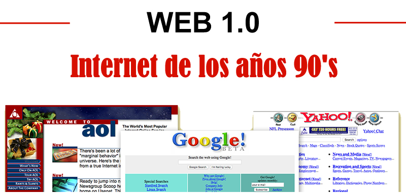

| Fecha de lanzamiento |
Finales de los años 80 y principios de los 90 |
Años 2000 |
2010s |
Proyectado para mediados de los 2020s |
| Descripción |
Se le llama así al internet que solamente brindaba información y no existía
interacción con el usuario. |
Es cuando el usuario final puede interactuar con el contenido en internet por medio de redes
sociales, e incluso crearla por medio de Blogs. |
No es más que una evolución de la anterior con la inclusión de bases de
datos, empuje de tecnologías de inteligencia artificial, web 3D, y muy importante ahora,
la adaptación para diferentes tamaños de pantallas de dispositivos móviles. |
Esta versión es en la que estamos entando ahora donde sus principales servicios son: la
información de búsqueda personalizada, el internet de las cosas, cloud computing y big data. |
| Enfoque Principal y Ejemplos |
Contenido estático |
Interacción de usuario limitada |
Datos semánticos |
Inteligencia artificial y automatización |
| Sitios web de noticias, directorios en línea |
Redes sociales, wikis, blogs |
Motores de búsqueda semánticos, asistentes virtuales |
Asistentes personales virtuales, interfaces cerebro-computadora |
| Experiencia del usuario |
Pasiva |
Interactiva |
Perzonalizada |
Altamente perzonalidad y automatizada |
| IMAGEN ALUCIVA |
 |
 |
 |
 |